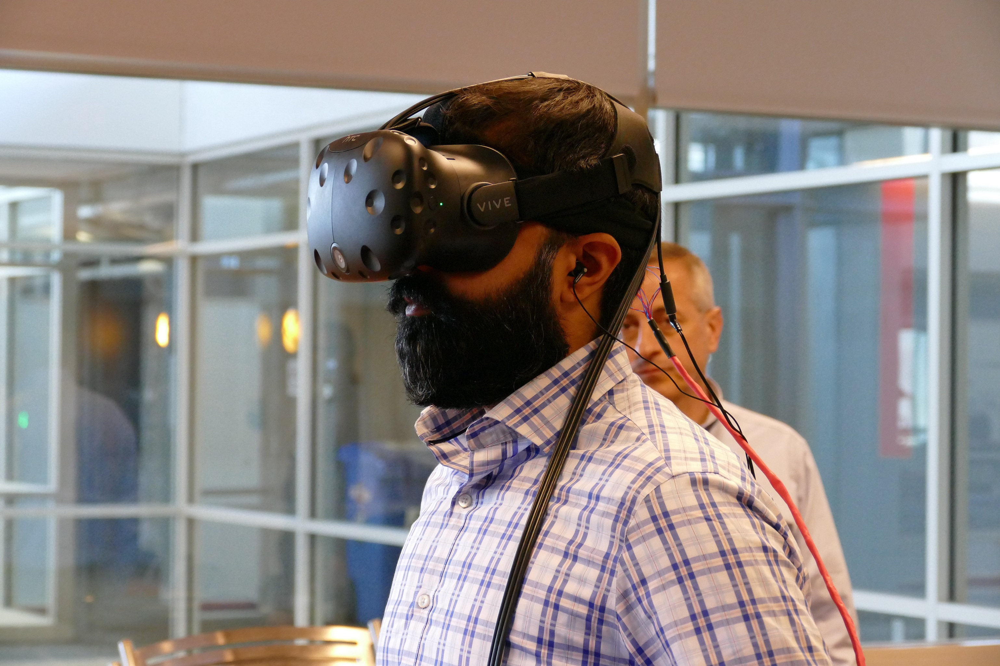
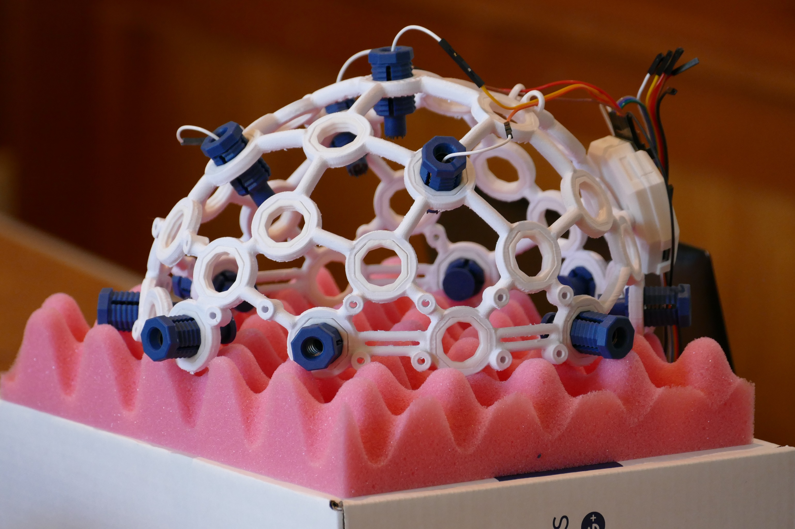
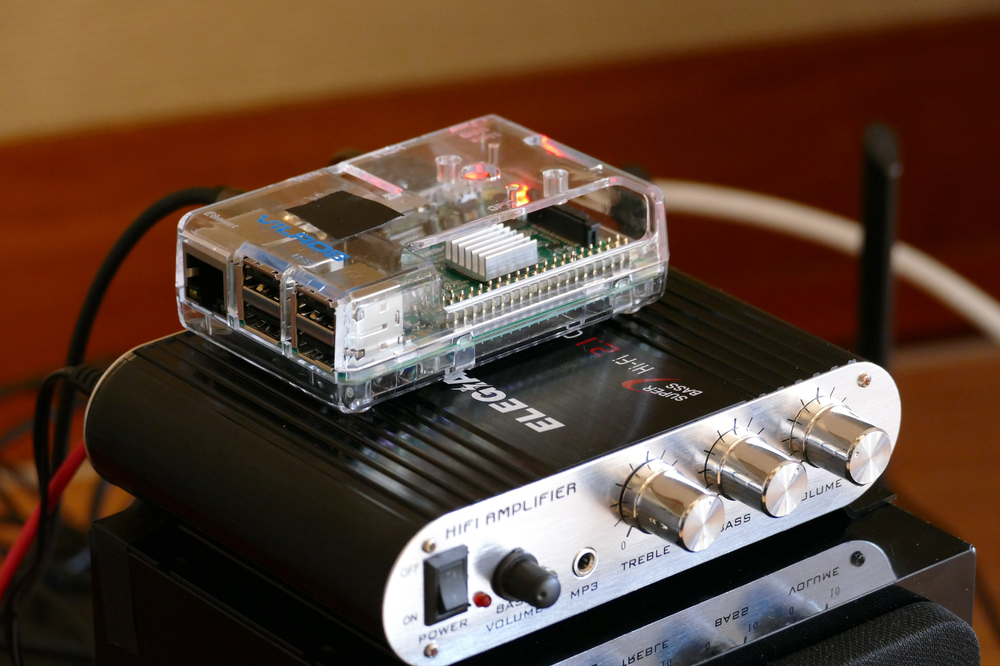
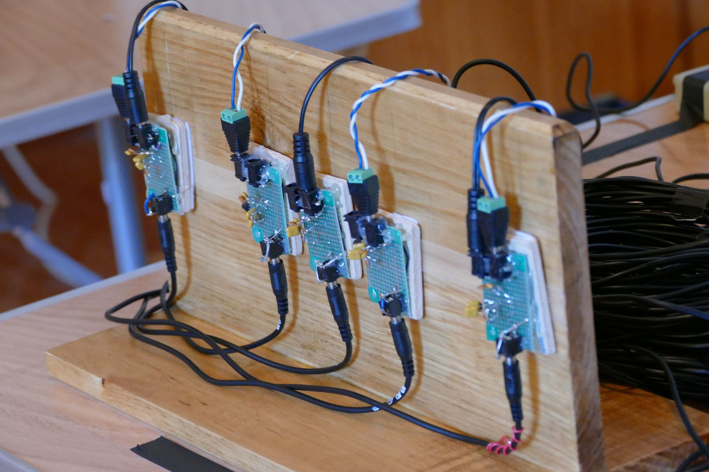
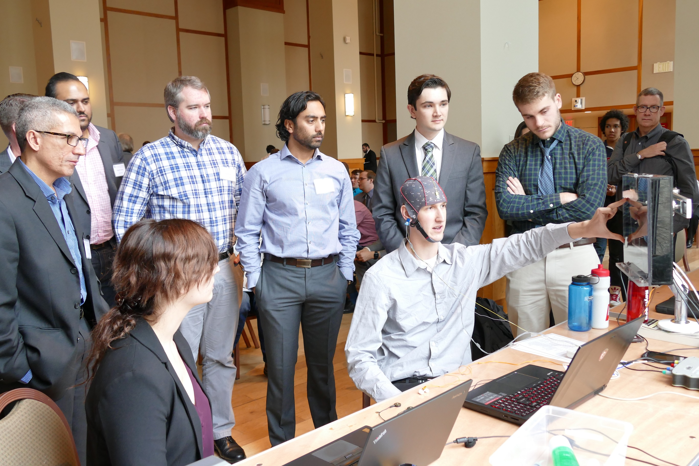
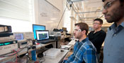
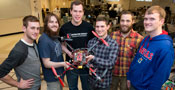
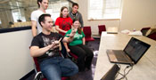
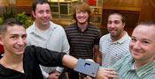
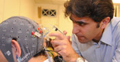

The Department of Electrical and Computer Engineering (ECE) at Northeastern University offers this senior level course, which is mandatory for all students. This two semester long course provides valuable experience for our undergraduate students. The ECE capstone design course is one of the most challenging, exciting, and successful programs on campus. A number of industrial partners, research institutions, business school in connection to the entrepreneurship program, as well as many other internal and external sources are involved with this course. The main objective of this course is to provide a multidisciplinary experience, integrating knowledge from the core, intermediate, and advanced courses in electrical engineering. The capstone design course is focused around a single major course objective with a working project as an output. The course intends to give students experience in finding a satisfactory solution of an open-ended problem, which has more than one solution, and where the solution involves actual hardware that needs to work. The design is carried out in engineering teams. A project involving each team gives valuable experience in planning, division of work, and maintaining individual accountability within a framework of group success. The students select projects according to the following three categories: (1) Industry-based capstone design projects, which are sponsored by industry; (2) Faculty-based advanced research projects, which are proposed by faculty through research centers such as CenSSIS, CDSP, etc; and (3) Student-based capstone design projects, which are proposed by the innovative ideas stemming from the students themselves.
Every year 20 teams are involved with fascinating projects trying to accomplish their design tasks. Each team consists of 4-6 members with expertise in hardware, software, signal processing, and system knowledge including communications and control systems. Constructed from solid devices, microprocessor, sensors, and other electronic components (all purchased within a specified budget), more than 80% of the projects are successfully completed. This is how our senior undergraduate students taking on challenging, hands-on engineering capstone design projects, building useful state of the art systems, guided by the faculty advisors. The students perform the design tasks in the capstone design laboratory, which is accessible 24 hours. A design competition is the final stage of this program in which a number of expert judges from the industry are invited to evaluate the best three projects.
A natural outcome of capstone experience is to introduce a strategy for reliable integration of research and curriculum development. It becomes possible to link multidisciplinary projects that integrate new; state-of-the-art research advances in emerging technology areas into upper-level undergraduate engineering curricula. A major objective is to involve faculty and researchers with the capstone program. In addition, this interaction is a motivating factor for our students to pursue graduate studies, to enhance their skills, and to facilitate employment opportunities.
There are many ways that you can contribute to this program. For more information, please contact Taylor Brown at 617.373.7267 or gt.brown@neu.edu.
- First Place
Project Title: Project VIEW: Visionless Interfacing Exploration Wearable
Team: Ben Dunbar, Justin Hynes-Bruell, Bill Wisheart, Eric Shi, Gareth Moo, Tom Kolongowski
Advisors: Professors Bahram Shafai and Sarah Ostadabbas - Second Place
Project Title: Audio Expression Box
Team: Victoria Suha, Jack Davis, Chris Babroski, Nick Knaian, Mark Lang
Advisor: Professor Bahram Shafai - Second Place (Runner-up)
Project Title: Aware ChairTeam: Neil Suttora, Brian Wilcox, Bernard, Liang, Kyle Jones, Greg DabrowskiAdvisor: Professor Waleed Meleis - Third Place
Project Title: Brain-Computer Interface for Mobile Device Interaction
Team: Gerald LaMountain, Yufeng Wang, Henry Yan, Yinyin Ye
Advisor: Professor Masoud Salehi - Third Place (Runner-up):
Project: Modular Wireless Speaker System
Team: Fouad Al-Rijleh, Brian Crafton, Samantha Gray, Samuel Letcher, Zach Paulson, Kevin Wilson
Advisor: Professor Bahram Shafai - Third Place (Runner-up):
Project: DORI (Deployable Observation & Reporting Instrument)
Team: Emily Pankosky, Kevin Meador, Olivier McNicoll, Matej Herega, Richard Stoeffel, Melissa Healy
Advisors: Professors Bahram Shafai and Taskin Padir
Featured Capstone Design Projects
2017
|  Project VIEW |  Brain-Computer Interface for Mobile Device Interaction |  Modular Wireless Speaker System |
2016
 SentSys: An All-Terrain Robotic Sentry |  The Eos Link: Pneumatic Augmented Reality Tactile Feedback Platform |  Quadcopter Control with Leap Motion (QCLM) |
2015
 Coastal Automated Monitoring System |  SoundSelect Array System |  Multisensory Brain Computer Interface for Binary Communication in the ICU |
2014
|  EOG Assisted Communication Device | Memory Assistive Glasses |
2013
|  TRAQ - an autonomous quadcopter | Interoperable Communication Device (ICD) |  Gesture Operated Computer Aided Design tool (goCAD) |
2012
2011
2010
|  Wireless wrist device that automatically alerts emergency responders | Numbers Empower - Detailed Energy-Consumption |  Brain-Computer Interface Controlled Robot |